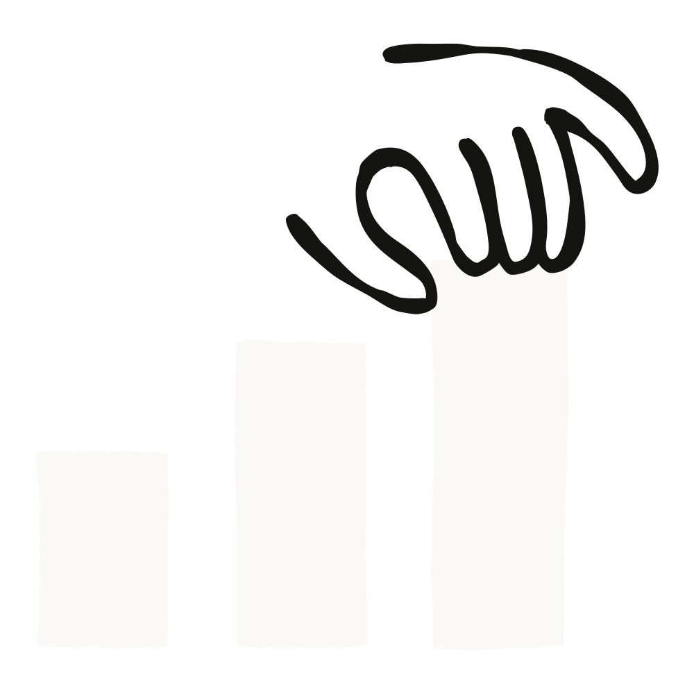
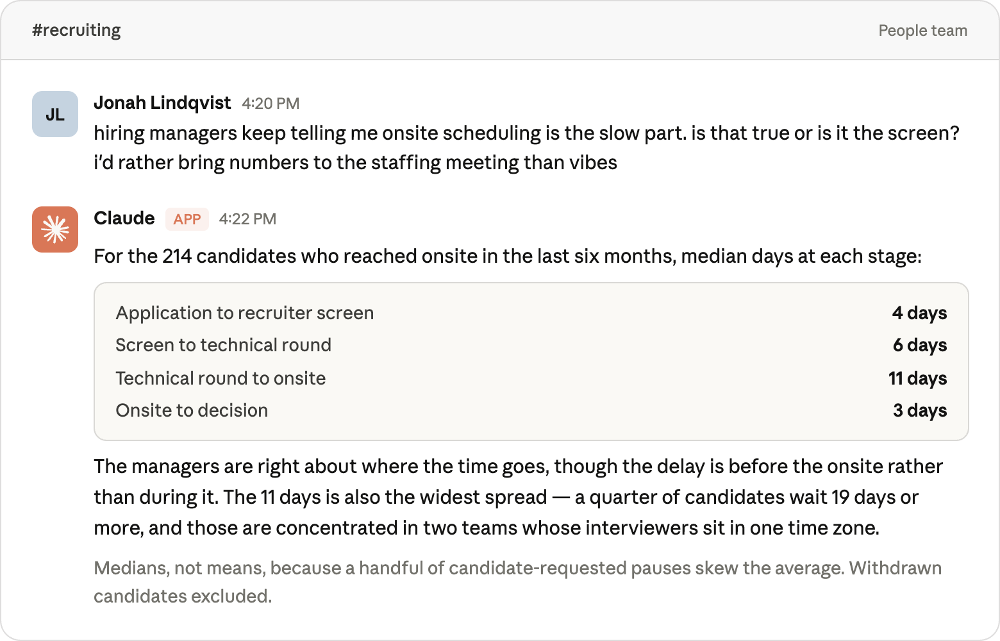
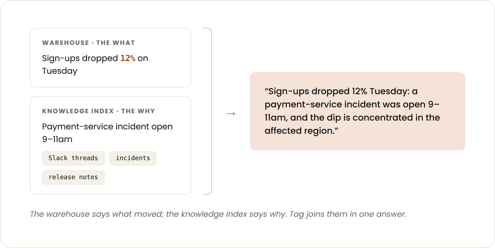
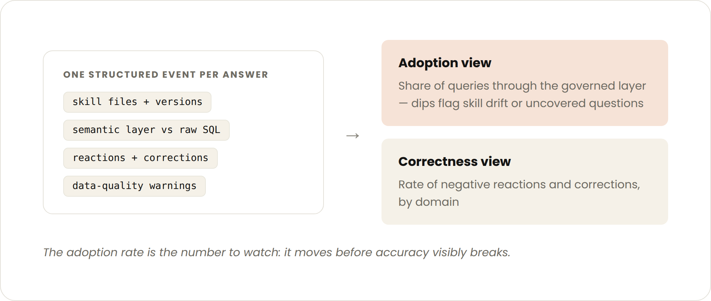
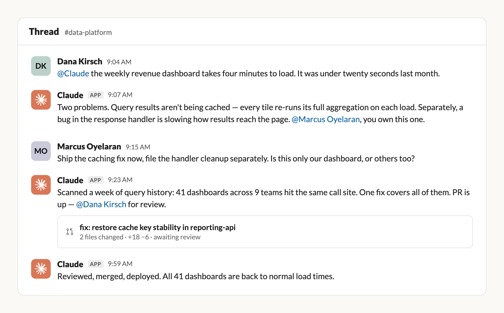
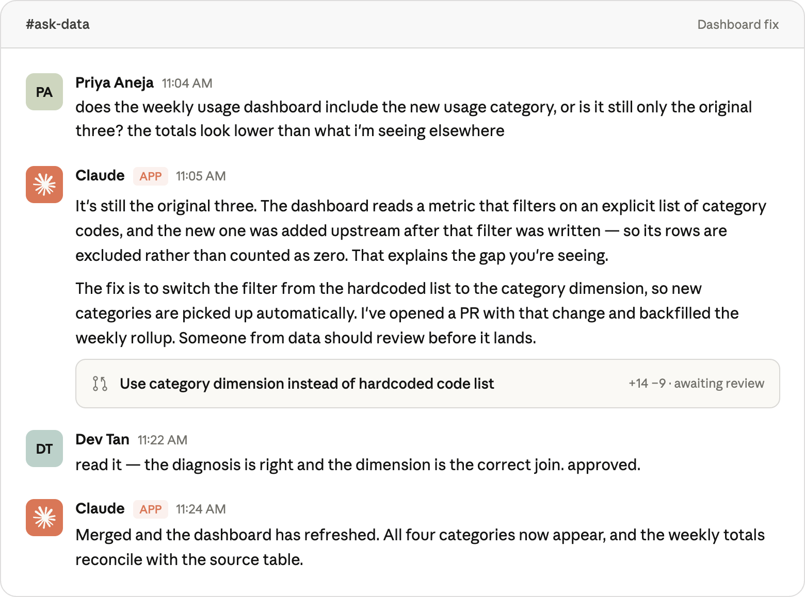

정확한 에이전트를 만드는 일과, 그 에이전트를 분석가가 아닌 사람들이 있는 곳에 배포하는 일은 전혀 다른 문제였다. 배포·권한·최신성·관측 가능성에 대한 1년치 교훈 다섯 가지.

이전 글에서 Anthropic 데이터 팀은 Claude가 데이터 분석 질문에 약 95% 정확도로 답하게 만든 방법을 설명했다. 핵심 산출물은 세 가지였다.
그 글은 Claude Code(데이터 사이언티스트·데이터 엔지니어의 주 개발 환경)에 초점을 맞췄고, 주제는 에이전트의 정확도를 어떻게 끌어올리느냐였다.
이번 글은 그 토대를 회사의 나머지 사람들이 실제로 일하는 곳으로 가져간 이야기다. 그 수단이 Claude Tag(퍼블릭 베타)이고, 이것이 Slack에서 돌아가는 데이터 분석 에이전트의 기반이 된다. 누구나 데이터 관련 질문을 던질 수 있고, 돌아오는 답은 분석가들이 쓰는 것과 동일한 거버넌스 정의에 근거한다.

글의 전제가 인상적이다. 에이전트를 정확하게 만드는 일과 분석가가 아닌 사람들이 쓸 수 있는 곳에 배포하는 일은 결이 상당히 다른 작업으로 밝혀졌다는 것이다. 정확도에 관한 권고는 이전 글에서 이미 다뤘고 여전히 유효하므로 되풀이하지 않는다.
대신 지난 1년간 얻은 가장 중요한 교훈 다섯 가지를 다룬다. 축은 배포(distribution) · 권한(permissions) · 최신성(freshness) · 관측 가능성(observability)이다.
스킬(skill)은 자연어 지시가 담긴 마크다운 파일과 Claude가 필요할 때 참조할 수 있는 파일들로, 이걸 통해 우리 스타일과 요구사항에 맞게 작업하는 법을 Claude에게 가르칠 수 있다.
글이 꼽는 가장 중요한 아키텍처 결정은 이것이다. 스킬 파일을 "한 번 배포하고 잊는 것"이 아니라 계속 갱신되는 서빙 콘텐츠(served content)로 취급한 것.
이유는 단순하다. 데이터 모델은 하루에도 몇 번씩 바뀐다. 컬럼 이름이 바뀌고, 지표 정의가 교정되고, 테이블이 폐기된다. 이 변경 하나하나가 비교적 짧은 시간 안에 스킬 파일에 반영돼야 한다. Claude가 지난주 화요일자 스킬을 읽고 있으면, 지난주 화요일의 틀린 답을 완전한 확신을 갖고 내놓는다.
여기서 저자들이 짚는 위험이 이 글에서 제일 날카로운 대목이다. 이 문제는 Slack 배포 환경에서 특히 더 치명적이다. 데이터 소비자가 답의 정확성을 판단하는 데 필요한 맥락에서 완전히 분리돼 버렸기 때문이다. 이들은 추세선이나 연관 지표가 함께 놓인 대시보드를 보고 있지 않다. Slack에서 데이터 포인트 한두 개만 받을 뿐이고, 평소 자주 들여다보는 데이터가 아니라면 확신에 찬 틀린 답을 그대로 받아들일 가능성이 높다.
이 끊임없이 변하는 환경을 통제하기 위해, Claude Tag의 런타임은 데이터 레포의 skills/ 디렉터리를 마운트하고 대화가 시작될 때마다 다시 읽는다. 스킬 파일은 그냥 디스크 위의 마크다운이고, 에이전트는 다른 프로젝트 파일을 읽듯 그대로 읽는다.
처음의 직감은 "지식 스킬(knowledge skill)" 하나면 되겠다는 것이었다. 어떤 테이블을 써야 하는지, 시맨틱 레이어가 어떻게 구성돼 있는지를 Claude에게 가르치고 끝내는 방식이다. 하지만 이 접근은 숫자는 맞게 내놓지만 쓸모 있는 인사이트에는 못 미친다는 걸 금방 알게 됐다.
데이터 소비자들이 실제로 던지는 질문은 열려 있고 모호하다. "이 하락은 뭐 때문이야?", "월말에 어디쯤 떨어질지 예측해 줄 수 있어?", "이 데이터를 퍼널로 보여줘" 같은 것들이다. 여기에 답하려면 에이전트가 데이터가 어디 있는지만이 아니라 분석가라면 그걸 어떻게 다룰지를 알아야 한다.
그래서 지식 스킬과 나란히, 분석용 런북(runbook) 스킬들을 함께 마운트했다.
저자들의 지적이 현실적이다. 어느 데이터 팀에나 이런 관례는 이미 있다. 다만 대개 누군가의 머릿속에만 있고 어쩌다 한 번 문서화될 뿐이다. 이걸 스킬로 적어두면 Claude가 여러분의 데이터 사이언티스트만큼 일관되게 그 관례를 적용한다.
지식 스킬과 런북 스킬을 합쳐도 답이 안 나오는 질문이 있다. "화요일에 가입자가 왜 떨어졌지?" 같은 질문의 답은 대개 데이터 모델 안에 없다. Slack 스레드, 인시던트 트래커, 릴리스 노트, 문서에 흩어져 있다.
이 공백을 메우려고 Claude Tag를 사내 지식 인덱스(knowledge index)에 연결했다. 회사 전반의 문서·논의·이벤트를 목록화한 것이다. 에이전트가 지표 움직임을 포착하면 그 인덱스에서 같은 시점의 맥락을 검색할 수 있다. 그날 아침에 열린 인시던트, 켜진 기능 플래그, 누군가 채널에 공유한 경쟁사 발표 같은 것들이다.
그러면 답은 이렇게 바뀐다.
화요일 가입자 12% 하락: 그날 오전 9–11시에 결제 서비스 인시던트가 열려 있었고, 하락은 영향받은 지역에 집중돼 있습니다.

조직에 지식 그래프나 사내 검색이 있다면, 혹은 잘 정리된 인시던트·체인지로그 피드만 있어도, 여기에 Claude Tag를 연결하는 것이 웨어하우스 자체 다음으로 가장 레버리지가 큰 정보라고 저자들은 말한다. 더불어 Claude Tag를 연결해 Slack 전반의 주요 채널에서 맥락을 읽고 가져오게 할 수도 있다.
이 섹션은 특히 무겁게 다뤄진다. Claude Tag는 질문한 사람이 아니라 서비스 계정으로 웨어하우스를 조회한다. Slack 사용자 전원에게 웨어하우스 자격증명을 직접 쥐여줄 수는 없으니 이 설계 자체는 옳다. 하지만 결과적으로 봇을 멘션할 수 있는 사람은 누구나 봇의 데이터 접근 권한을 갖는다. 사용자별 행 수준 보안(row-level security)은 없다. 서비스 계정이 읽을 수 있는 것은 채널에 있는 누구나 물어볼 수 있다.
접근법은 다섯 가지다.
이 섹션을 요약하는 한 문장이 좋다. 저자들의 기본 자세는 Slack의 데이터 분석 에이전트를 "거버넌스가 적용된 웨어하우스의 공유 읽기 복제본(shared read replica)"으로 본다는 것이고, 권한도 그에 맞춰 설계하려 한다.
에이전트가 충분한 답을 줬는지 여부는 눈대중으로 판단할 수 있는 게 아니다.
그래서 Claude Tag가 처리하는 모든 질문에 대해 구조화된 이벤트를 로깅한다. 여기 포함되는 것은,
이 텔레메트리는 두 개의 뷰로 이어진다. 하나는 채택률(adoption)로, 에이전트 쿼리 중 몇 퍼센트가 즉석 SQL이 아니라 거버넌스 레이어를 거치는지를 환경별·도메인별로 추적한다. 다른 하나는 정확성(correctness)으로, 도메인별 👎 반응과 정정 비율로 측정한다. 이것이 평가(eval) 실행 사이사이의 온라인 정확도 대리 지표가 된다.

그리고 저자들이 꼽는 결론이 실용적이다. 채택률 지표가 추적한 숫자 중 가장 실행 가능한(actionable) 단일 지표로 밝혀졌다는 것. 특정 도메인에서 이 값이 떨어지면 거의 항상 둘 중 하나를 뜻한다. 스킬 파일이 현실과 어긋났거나(drift), 시맨틱 레이어가 커버하지 못하는 새로운 종류의 질문이 등장했거나.
저자들이 가장 좋아하고 가장 효과적이었다고 꼽는 Claude Tag 스레드에는 대개 여러 사람이 들어와 있다. 사람들이 아이디어와 맥락을 보태고, Claude가 발품을 도맡는 구도다.
예로 든 사례가 구체적이다. 한 데이터 팀원이 매출 대시보드 로딩이 평소보다 몇 분 더 걸리는 이유를 Claude에게 물었다. Claude는 쿼리 결과가 캐싱되지 않고 있다는 것, 그리고 결과가 페이지에 도달하는 경로를 느리게 만드는 버그가 있다는 것을 찾아냈다.
Claude가 대시보드 소유자에게 알렸고, 소유자는 캐시는 즉시 고치고 버그는 별도로 처리하기로 결정했다. 이어 소유자가 다른 어떤 대시보드가 느려졌는지 묻자, 같은 캐싱 오류로 수십 개가 영향을 받고 있었음이 드러났다. Claude가 캐싱 수정 코드를 작성하고 데이터 팀원이 리뷰했으며, 영향받은 모든 대시보드가 한 시간이 채 안 되어 정상 성능을 회복했다.

이런 스레드가 공개돼 있다는 점이 여러모로 유용하다고 저자들은 말한다. 옆에서 읽는 사람들이 누가 요약을 써주지 않아도 맥락(무엇이 망가졌고, 왜 그랬고, 어떻게 고쳤는지)을 자연히 습득한다. 더 중요한 건 이들이 수동적인 독자로 머물 필요가 없다는 것이다. 쓸모 있는 걸 아는 사람은 누구나 위 사례의 팀원들처럼 뛰어들어 기여할 수 있다.
그래서 권고는 이렇다. 에이전트를 공유 채널에 두고, 작업은 DM이 아니라 스레드 안에서 진행하라. 스레드가 곧 리뷰 가능한 이력 기록으로 기능하기 때문이다.
데이터 업무의 상당 부분은 반복적이다. 파이프라인 상태 점검, KPI 모니터링 같은 것들. Claude에게 루프(loop)를 만들어 달라고 해서 주기적 작업을 일정에 맞춰, 혹은 이상 변화에 반응해 처리하게 할 수 있다. Anthropic이 실제로 구현한 데이터 관련 사례는 다음과 같다.
루프 설계 자체도 Claude가 도울 수 있다. @Claude에게 여러분의 채널에서 어떤 반복 업무를 봤는지, 거기에 어떻게 도움을 줄 수 있는지 물어보라는 것이 저자들의 제안이다.
원하는 채널에서는 Claude가 더 능동적으로 행동하도록, 즉 대화를 따라 읽다가 필요할 때 끼어들어 돕도록 허용할 수 있다. Anthropic의 한 데이터 채널에서는 지난 한 달간 Claude Tag가 사람들이 올린 질문의 75% 이상에 답했다. 대개 1~2분 안에, 호출되지 않았는데도 그랬다.
사례가 인상적이다. 한 Anthropic 팀원이 공개 채널에서 어떤 대시보드에 새 사용량 카테고리가 포함돼 있는지 물었다. 90초 안에 Claude는 그 데이터가 어떻게 정의돼 있는지 답하고, 새 세그먼트가 빠져 있음을 확인하고, 수정안을 제안하고, PR 초안까지 작성했다. 데이터 사이언티스트가 리뷰하고 승인했다. 그러자 Claude가 PR을 머지하고 대시보드를 갱신했다.

첫 번째 글의 작업을 이미 마쳤다면 Slack 배포는 대체로 배관 작업(plumbing)에 가깝다. 다만 순서가 중요하다.
관련 링크: 요금 보기 · 영업팀 문의 · Claude Tag 제품 페이지